Pumpkin carving doesn't have to mean scary jack-o'-lanterns and dramatic grins staring down the whole street. A cute design, a sleepy face, a tiny fox, a whole family of mini pumpkins, brings just as much charm to a front porch without leaning into anything genuinely spooky.
None of these require advanced carving skill, either. Most come down to a handful of simple shapes, spaced thoughtfully, with oversized eyes doing most of the emotional heavy lifting.

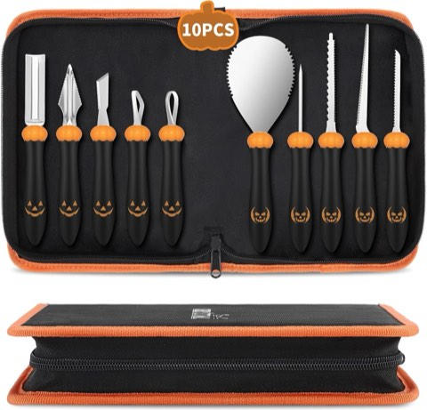
CHRYZTAL 10 Piece Professional Pumpkin Carving Kit, Heavy Duty Stainless Steel
Shop on Amazon18 Cute Pumpkin Carving Ideas
Tiny Smile Pumpkin Family
For a first idea, a whole family of mini pumpkins beats putting all the effort into one large one.
Several small pumpkins, each given a different expression, one smiling, one winking, one with heart-shaped eyes, create far more variety than a single oversized design ever could.
Tiny hats, bows, scarves, or glasses added to each pumpkin build out individual personalities, and a row of mini pumpkins staring at the front door with completely different expressions might be the most wholesome version of this whole list.
Cute Ghost Cat Pumpkin
Why choose between a cat and a ghost when both can combine into one single design?
A cat face with pointed ears forms the base, with a few flowing lines carved around the lower part of the pumpkin to suggest the cat floating like a ghost.
Keeping the eyes large and expressive, with a tiny triangular nose and small mouth, finishes the look, a Halloween theme without relying on anything scary, and a strong fit for a family-friendly display.
Adorable Strawberry Pumpkin
This one feels genuinely unexpected, which is exactly what makes it fun to try.
A smaller pumpkin works best here, carved with a strawberry-inspired pattern of simple seeds and leaf shapes near the stem, with a tiny smiling face optional in the center.
Grouped with a plain pumpkin and a tiny flower-carved one, it builds a genuinely playful little arrangement, not the move for a traditional spooky porch, but a strong one for something more whimsical instead.
Pumpkin With Flower Carving
Halloween pumpkins don't actually need faces at all. For something softer, flowers carved across the surface deliver a genuinely different look entirely.
Simple petals and circular centers, rather than highly detailed floral patterns, keep the carving approachable for beginners.
One large flower in the center, or several smaller blooms scattered around, both work, paired with mums, dried flowers, and warm-toned foliage, the whole arrangement feels intentional rather than purely seasonal.
Cute Witch Pumpkin
A witch design gives plenty of room for creativity without actually making the carving itself complicated.
A simple face with large eyes, a small nose, and a smiling mouth forms the base, with a few lines suggesting a witch hat carved around the top.
Skipping the carved hat entirely and placing a miniature witch hat over the pumpkin instead is often the easier choice, it's also swappable later, which a fully carved hat never is.
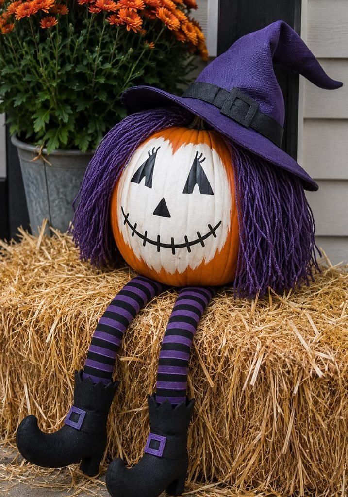
Smiling Bat Pumpkin
Bats usually get a spooky reputation, but they turn adorable fast with the right approach to the design.
Two pointed ears and large circular eyes form the base, with tiny fangs and a small smile replacing the usual intimidating expression.
The oversized eyes make the biggest difference here, they instantly give the whole pumpkin a cartoon-like personality that suits a cute Halloween display perfectly.
Cute Mushroom Pumpkin
A mushroom design brings a genuinely charming woodland feel, and a pumpkin's rounded surface gives plenty of room to play with the shape.
A few rounded mushroom caps carved across the front, simple stems underneath, and tiny dots across the caps build the whole look.
The design can stay fully abstract or get a tiny smiling face added to one mushroom, it also pairs beautifully with natural fall decor like acorns, pinecones, moss, and dried leaves.
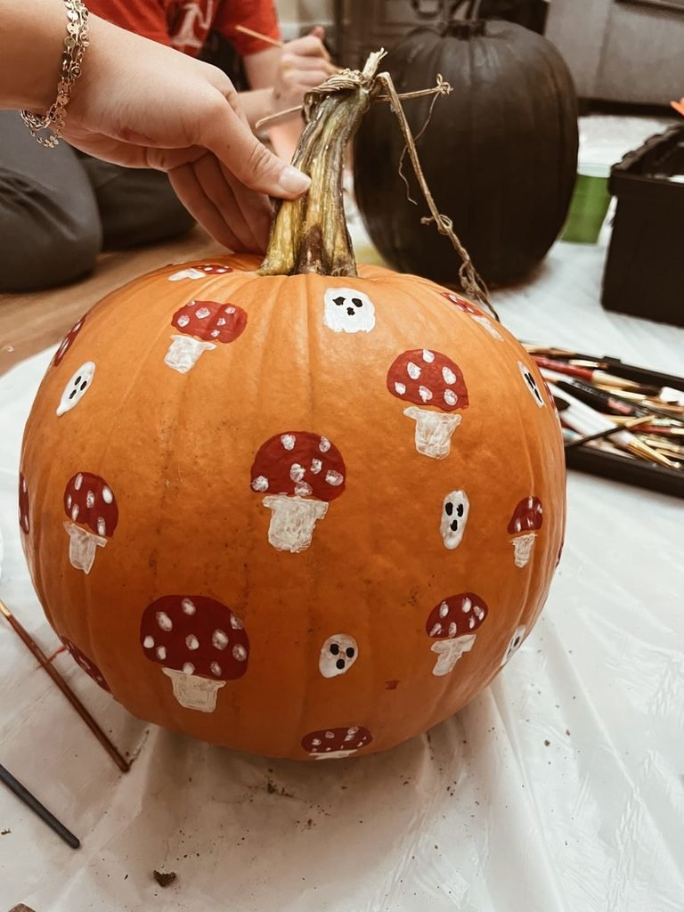
Artificial Moss Mat Roll, 12 x 71 Inch, Soft Faux Moss Table Runner
Shop on AmazonSleepy Moon Pumpkin
A sleepy expression turns an otherwise ordinary pumpkin into one of the cuter options on this whole list.
Two closed eyes with small curved lashes, paired with a tiny smiling mouth, form the base, a few stars carved around the face build a dreamy nighttime theme around it.
A small crescent moon beside the face pushes the sweetness further, and the whole design feels playful rather than spooky, without announcing Halloween from three houses down.
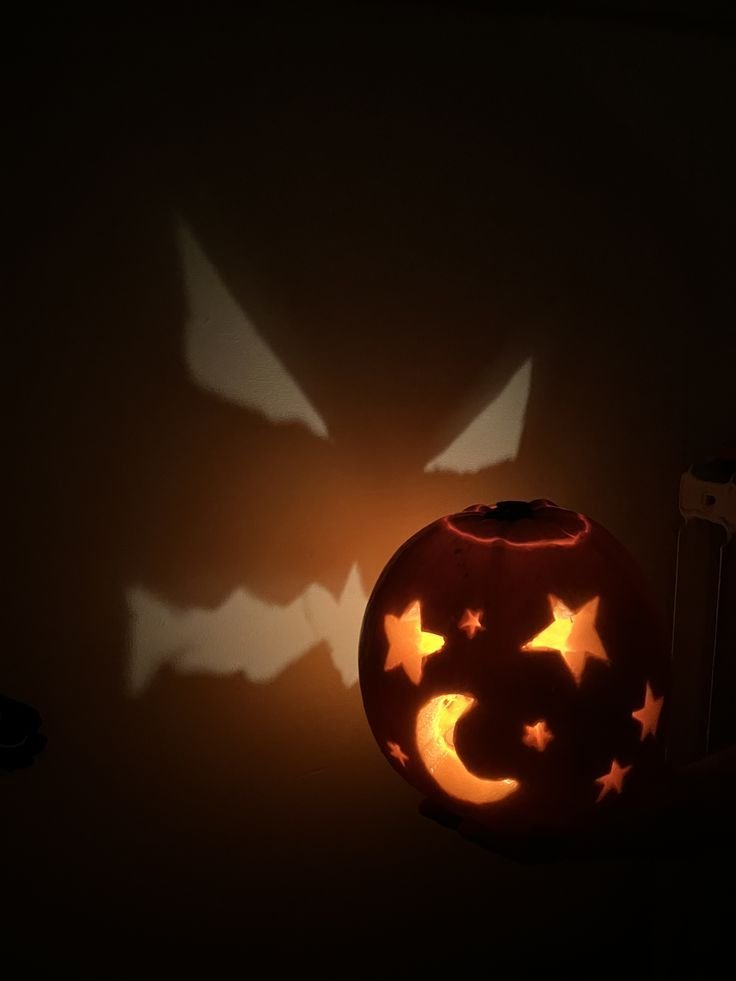
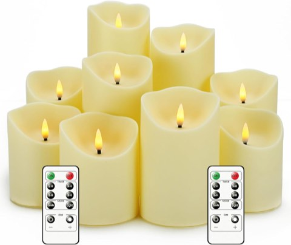
Nimiko Flameless Flickering Candles with Remote, Battery Operated, Timer
Shop on AmazonCute Fox Pumpkin
For something a little more autumnal, a fox design leans directly into the pumpkin's existing warm orange color, which already does half the work on its own.
Two pointed ears, large almond-shaped eyes, a small triangular nose, and a gentle smile make up the face, with a few curved lines around the cheeks suggesting fluffy fur.
It looks adorable in daylight and almost magical once a warm LED light goes inside, paired with dried leaves and a few mini pumpkins, it builds a full fall display without tipping into generic Halloween-aisle territory.
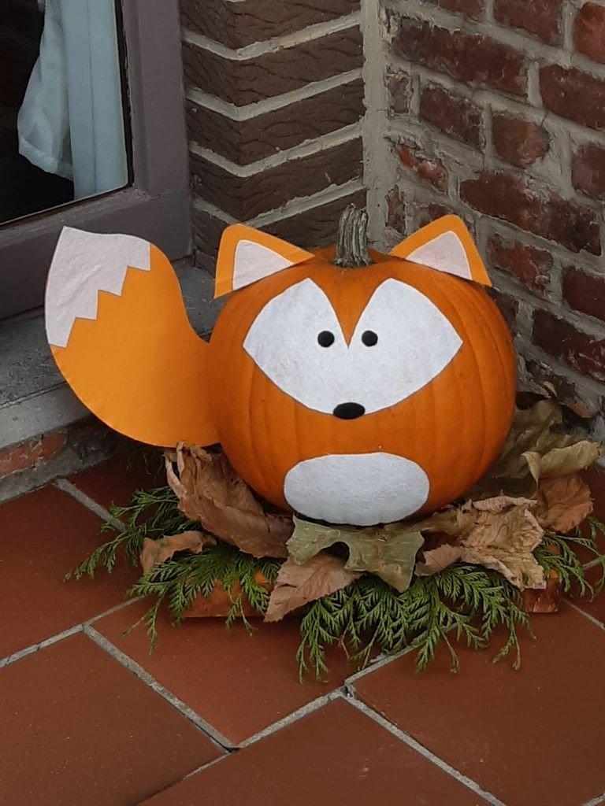
Starry Night Pumpkin
Not every cute pumpkin needs a face at all. For something more elegant, small stars carved across the surface build a miniature night sky instead.
A few moons, dots, and tiny shooting stars round out the pattern, and a deep orange pumpkin paired with a warm LED light makes the small cutouts glow like actual stars.
The pattern can stay random or lean into a deliberate constellation arrangement, and since it skips a face entirely, it doesn't require the same symmetry a character design would.
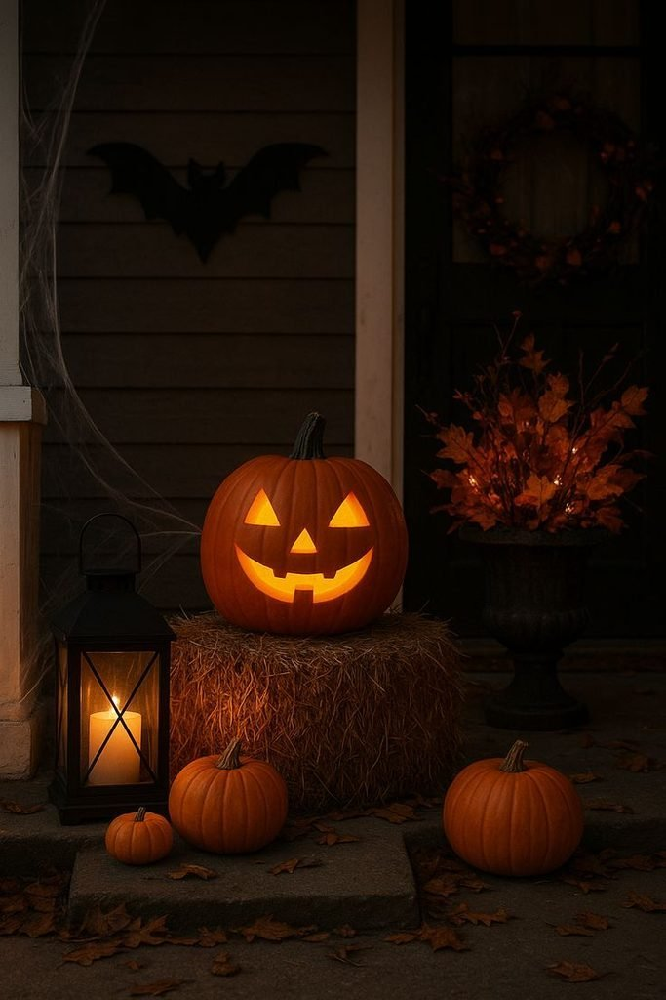
Little Puppy Pumpkin
For anyone who's a dog person first, skip the scary face entirely and turn the pumpkin into a puppy instead.
Floppy ears on either side, large round eyes, a little nose, and a happy mouth form the base, the ear shape can shift depending on which breed feels right to suggest.
A tiny tongue sticking out adds extra playfulness, and the design works especially well for a family with an actual dog to loosely match the carving to.
Happy Pumpkin Face
Sometimes the classic approach still wins. Instead of a traditional scary jack-o'-lantern, an exaggerated happy face with oversized eyes and a wide smile reads as cartoon character rather than haunted house.
This design works especially well when carving with kids, since the shapes can stay large and forgiving the whole way through.
No stencil is strictly required either, as long as sketching a few basic shapes feels manageable beforehand.
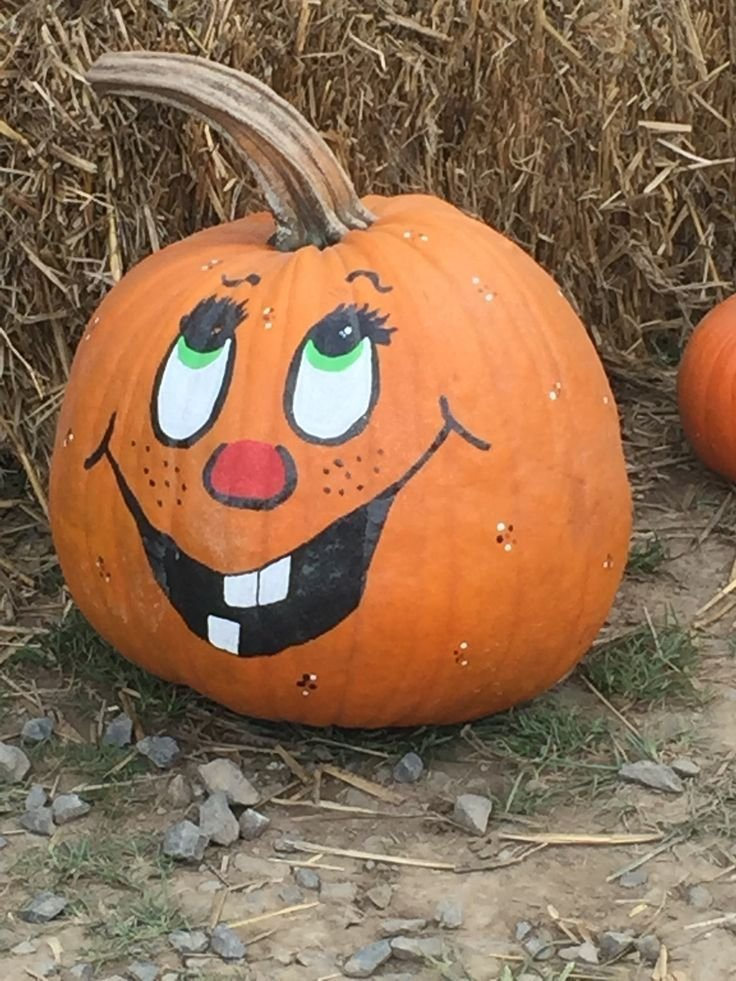
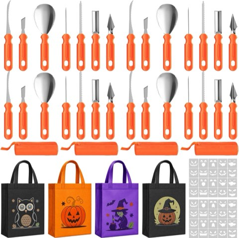
Lothee 76 Piece Pumpkin Carving Kit, 4 Set Bulk Pack with Stencils and Tools
Shop on AmazonCute Owl Pumpkin
An owl design looks genuinely impressive once the light goes on inside the finished pumpkin.
Two large circular eyes surrounded by simple feather-inspired cuts, with a small triangular beak between them, form the whole face.
Every single feather doesn't need carving, simple shapes actually create a stronger look at night, since the light makes the main features pop more clearly.
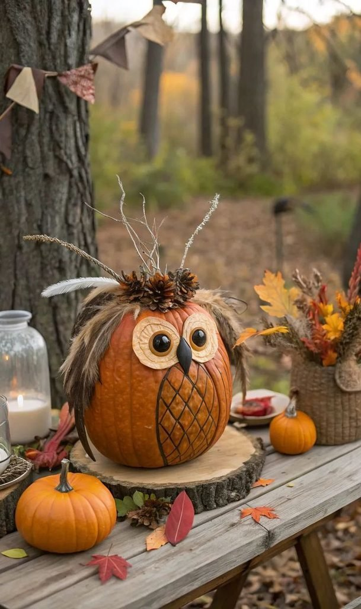
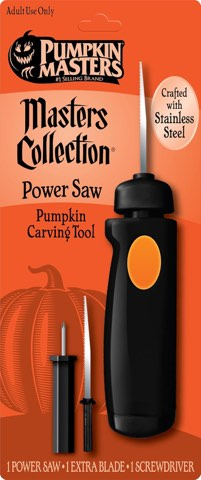
Pumpkin Masters Power Saw, Easy-Grip Design with Interchangeable Blades
Shop on Amazon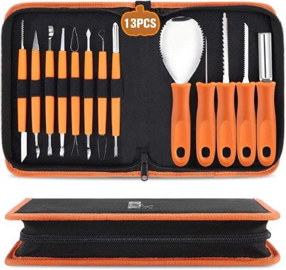
CHRYZTAL 13 Piece Professional Pumpkin Carving Kit, Heavy Duty Stainless Steel
Shop on AmazonSweet Little Bear Pumpkin
A bear face is another strong option for anyone chasing cozy over Halloween-scary this year.
Two rounded ears, large circular eyes, and a small muzzle carry the design, with a tiny heart-shaped nose adding extra personality to it.
A wide pumpkin works especially well here, giving enough surface to space the features naturally, a small scarf wrapped around the pumpkin adds a cozy fall touch without any extra carving at all.
Adorable Pumpkin Bunny
A bunny design plays with the actual shape of the pumpkin rather than just the face carved into it.
A taller pumpkin, two long ears carved near the top, large rounded eyes, a small nose, and a tiny mouth build the whole look.
The ears can stay attached to the pumpkin itself or be carved fully around their outline so they stand out once the pumpkin is lit from inside, rounded rather than sharp features keep the whole thing feeling soft.
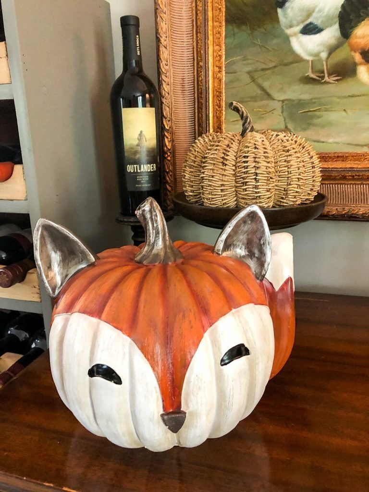
Heart-Shaped Eyes
For something cute without an hour of carving involved, heart-shaped eyes deliver fast and reliably.
Two small hearts on the front of the pumpkin, with a tiny smiling mouth underneath, is the entire design, symmetrical or deliberately uneven for a handmade look.
It's an especially strong fit for couples, families, or anyone chasing something softer than a traditional Halloween face. It also happens to make a ridiculously cute porch photo.
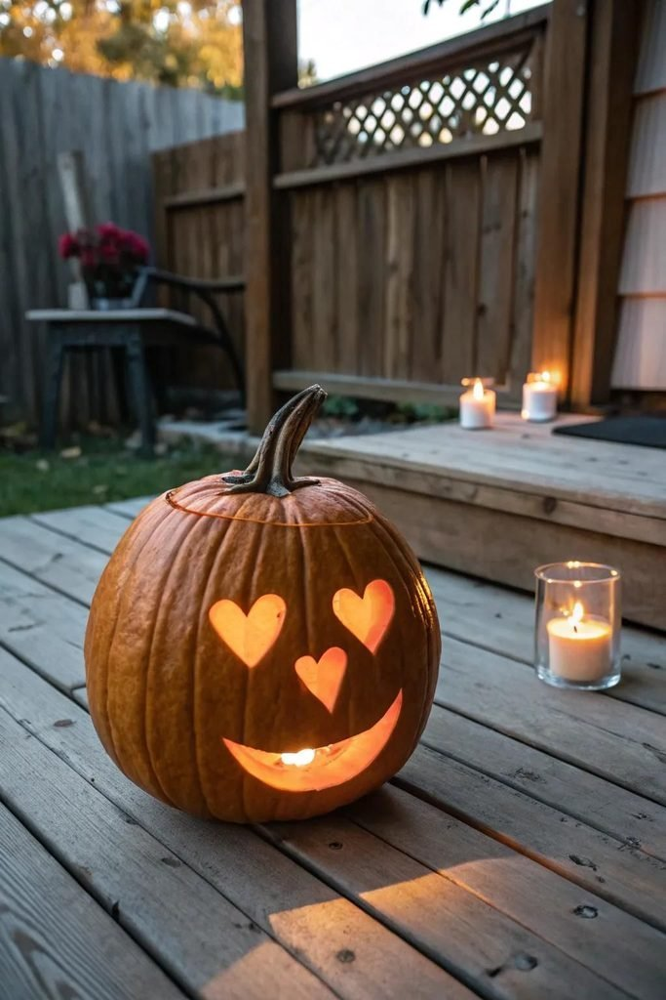
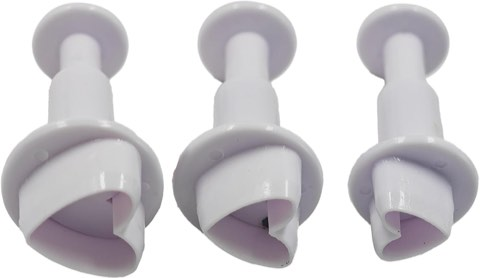
pson Plunger Cookie Cutter Set of 3, Mini Shapes for Baking and Decorating
Shop on Amazon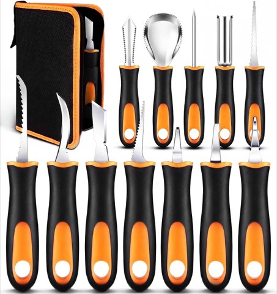
Pumpkin Carving Kit, 13 Piece Professional Heavy Duty Stainless Steel Tools
Shop on AmazonSmiling Ghost Pumpkin
Ghosts don't have to look terrifying at all. Two large oval eyes and a small rounded mouth, kept simple and evenly spaced, carry this design entirely on their own.
The expression matters more than the detail here, a slightly curved mouth shifts the whole pumpkin from spooky to genuinely cheerful.
A white or pale pumpkin pushes the ghost theme even further, and the soft color paired with glowing eyes looks surprisingly charming after dark.
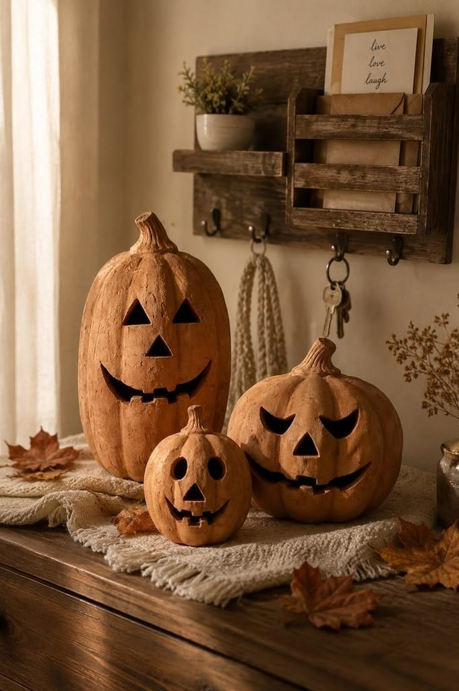
Cute Cat Pumpkin
A simple cat face is endlessly adaptable, as easy to simplify or dress up as the carver actually wants it to be.
Two pointed ears near the top, large rounded eyes beneath them, a tiny triangular nose, and a few whisker lines cover the whole design.
Oversized eyes are the trick that makes the expression feel genuinely sweeter and more playful than a standard carved face.
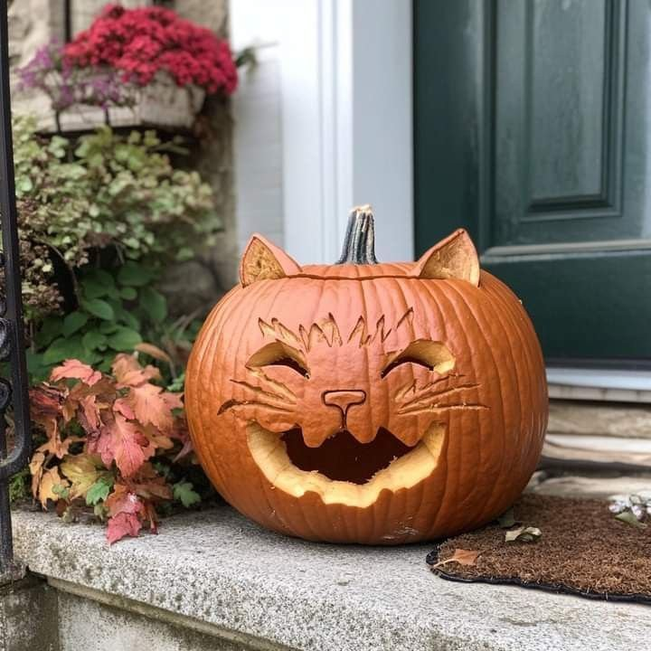
Choosing the Right Pumpkin
A pumpkin with a flat, stable base and a surface free of major soft spots carves far more easily than one that's already starting to bruise or wrinkle.
Size matters for the design, too, a wider pumpkin gives more room to space out detailed features, while a smaller one suits a simpler face just fine.
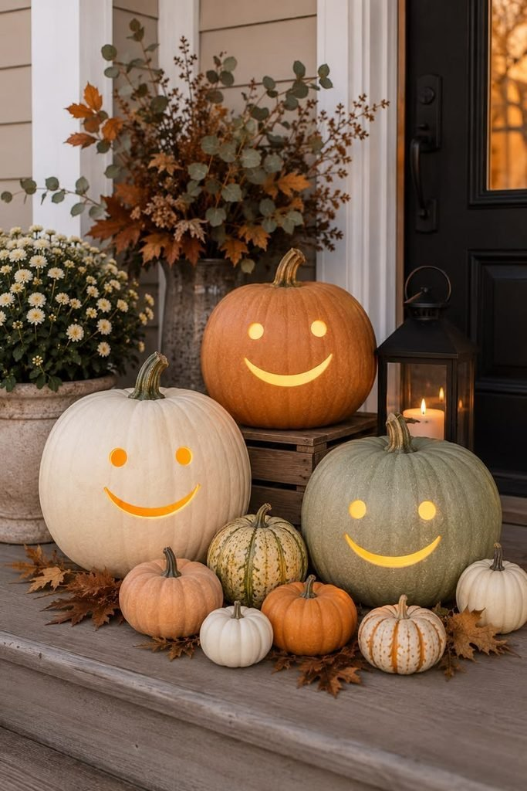
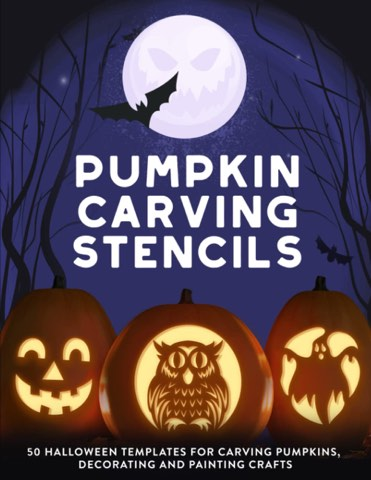
Pumpkin Carving Stencils, 50 Halloween Templates for Carving and Painting
Shop on AmazonFinal Thoughts
None of these eighteen ideas require a scary expression or advanced carving skill to actually look good. Simple shapes, spaced with intention, carry most of the charm entirely on their own.
Pick whichever face or pattern genuinely matches the vibe wanted on the porch this year, cozy, playful, or a little whimsical all work, as long as the result actually makes whoever carved it smile too.